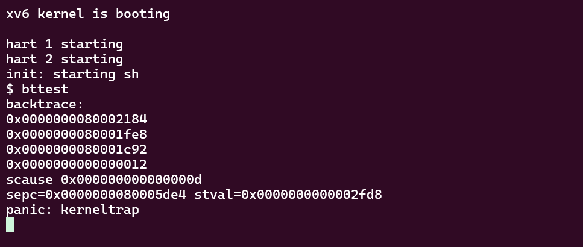

MIT6.s081 2021 Lab Traps
使用gdb调试xv6内核
从最近两个 Lab 开始，代码逻辑的复杂度明显上升，对内核进行调试可能是帮助理解操作系统机制的绝佳方法。因此在开始本 Lab 之前，我们先来配置一下针对 xv6 内核的 gdb 调试器。
- 安装
gdb-multiarch.
利用包管理工具进行安装，我使用的是 Ubuntu 系统，执行以下命令：
1 | sudo apt install gdb-multiarch |
- 在 xv6 项目根目录下可以看到
.gdbinit文件，其中已经写好了一些gdb的初始化选项，使用文本编辑器或cat命令查看：
1 | set confirm off |
- 在
~/.config/gdb/目录下的文件gdbinit中（没有则新建）添加安全加载路径，否则可能无法加载.gdbinit的配置。
1 | add-auto-load-safe-path <xv6项目的根目录>/.gdbinit |
- 打开两个终端窗口（可以使用 tmux 进行分屏），都需要进入 xv6 根目录，第一个窗口输入
make-qemu等待调试器连接，第二个窗口输入gdb-multiarch打开gdb，如果前面配置正确，那么gdb并自动加载.gdbinit配置，与qemu连接，之后便可以开始正常调试了。
RISC-V assembly
一些有关 RISC-V 汇编的问题，最好先通过网上博客或手册简单了解一下 RISC-V 的基本指令。
Q1:
Which registers contain arguments to functions? For example, which register holds 13 in main’s call to
printf?
A1:
可以参考 RISC-V 的 calling convention，a0 - a7: 这些寄存器用于传递函数的前八个整数或指针类型的参数，如果超出这些寄存器的数量，超出的部分会存放在栈上。观察指令 li a2,13 可知，13 作为 printf 的第二个参数，存放在寄存器 a2 中。
Q2:
Where is the call to function
fin the assembly code for main? Where is the call tog? (Hint: the compiler may inline functions.)
A2:
调用函数 f 和函数 g 的代码被编译器优化，直接计算出了结果 12，作为 printf 的参数存入寄存器 a1 中：
1 | 26: 45b1 li a1,12 |
Q3:
At what address is the function
printflocated?
A3:
位于 0x638 地址处。
Q4:
What value is in the register
rajust after thejalrtoprintfinmain?
A4: 参考 riscv-calling，ra 用来存储函数调用的返回地址，因此 ra 的值为 jalr 1544(ra) 的后一条指令地址，即 0x38.
Q5:
Run the following code.
2
printf("H%x Wo%s", 57616, &i);What is the output? Here’s an ASCII table that maps bytes to characters.
The output depends on that fact that the RISC-V is little-endian. If the RISC-V were instead big-endian what would you set
ito in order to yield the same output? Would you need to change57616to a different value?Here’s a description of little- and big-endian and a more whimsical description.
A5:
%x用于输出一个无符号十六进制整数。%s用于输出一个字符指针所指向的字符串，直到遇到空字符\0为止。
小端模式下，57616 的 十六进制表示为 e110，&i 首地址开始的字节分别为 0x72, 0x6c, 0x64, 0x0，对应 ASCII 表中的字符为 r, l, d，因此最终输出结果为 He110 World.
若采取大端模式，i 的值应当替换为 0x726c6400，57616 的值无需改变，因为十六进制的书写规则并没有改变（高位在左，低位在右）。
Q6:
In the following code, what is going to be printed after
'y='? (note: the answer is not a specific value.) Why does this happen?
A6:
关于可变参数的内容查看 《C Programming Language 2nd Edition》（K\&R）的 7.3 节 Variable-length Argument Lists.
简而言之，这样的操作将引发未定义行为，此时 ap 指向了一个未知的内存区域，并将该区域的数据以整型的形式输出。
Backtrace
思路
思路其实很简单：对照 lecture notes 给出的栈的结构，从当前栈帧的起始地址 fp 开始，fp - 8 的位置存放着当前函数调用的返回地址（上一次函数调用处的下一条指令地址），即我们 需要打印 的地址，fp - 16 的位置存放着上一次函数调用所在栈帧的起始地址，将该地址作为新的 fp 重复上述步骤即可。
关键问题是 什么时候停止 ？可以看到上述 backtrace 的过程就好像是在遍历一个链表，当链表的 next 域为空指针时链表到达末尾，那 traceback 完成后fp 的值应该是什么？为了寻找这个问题的答案，我选择先不设置终止条件，让它一直向上搜索，最后发现，返回地址最终为一个很小的值，这个地址显然不是我们想要的，在此之前应该退出，即本次 traceback 的尽头是 0x80001c92.

但打印出来的函数调用的返回地址似乎并没有什么规律，因此我又尝试将遍历过程中的栈帧起始地址 fp 打印出来，得到以下结果：

结合提示：
Xv6 allocates one page for each stack in the xv6 kernel at PAGE-aligned address.
原因就很明显了，在打印第三个返回地址时，此时栈帧起始地址为 0x3fffffa000，注意该地址后 12 二进制数为 0，且页面大小为 4KB，因此该地址位于一个页面的起始地址。又因为 xv6 内核只为每个 内核栈 分配一个页面的存储空间，该页面的起始地址按页面大小对齐，所以此时已经到达一个内核栈的顶端，无需继续遍历。
弄清楚了这些，代码的编写就很简单了：
1 | void backtrace(void) { |
代码
1 | --- a/kernel/defs.h |
Alarm
思路
目前为止感觉最复杂的一题，需要对 trap 机制有一个比较深入的理解，建议在上手之前先仔细阅读与 trap 有关的代码：kernel/trampoline.S 和 kernel/trap.c，这里也推荐一位博主写的两篇有关 xv6 的 trap 机制的博客：
6.S081——陷阱部分(一文读懂xv6系统调用)——xv6源码完全解析系列(5)
6.S081——补充材料——RISC-V架构中的异常与中断详解
test0: invoke handler
我们不妨按照提示的顺序来进行，不关注 sys_sigreturn，先把 sys_sigalarm 的功能实现。
实际上，sys_sigalarm 函数的功能很简单，只是简单地将用户态下传递的参数 ticks 和 handler 存入进程的 struct proc 结构体中。实现调用 handler 的操作需要在内核态下的 usertrap 中完成，具体来说，针对时钟中断导致的 trap 将在 if(which_dev == 2) 后的语句中被处理。有两个目标需要完成： 定时 和 函数调用 。
定时的逻辑比较清楚，在 struct proc 中添加变量 ticksum，代表从上次 handler 处理完成开始进程累计的时钟中断次数，该变量在进程初始化时设置为 0，随后每次遇到时钟中断，都自增 1，如果自增后的值达到了设定的间隔 ticks，则将其复位为 0，调用 handler 函数。
函数调用是一个需要考虑的问题，这里不能直接利用函数指针 handler 进行函数调用，因为 handler 指向的函数位于用户空间下，而 usertrap 位于内核态下，页表的地址映射不同，无法直接根据用户空间下的虚拟地址进行寻址（直接调用引发的错误如下图所示），需要在本次中断结束返回到用户态之后执行。因此正确的做法应该是设置进程 struct proc 的 epc 寄存器为函数指针 handler，这样在中断处理完成，进程回到用户态并被 CPU 调度执行后，寄存器 pc 将被设置预先保存的 epc 的值，这样函数 handler 就被成功调度执行了。至此，test0 应该成功通过。
在进入到 test1\&2 之前，有必要说一说我的一些思考：在上面的讨论中，我们知道内核无法直接根据函数指针 handler 的值进行用户空间函数的调用，那能否在内核态下根据进程的用户态页表和给定的虚拟地址，利用软件地址转换机制（vm.c 中的 walkaddr 函数）来将用户空间的虚拟地址转换为物理地址进行寻址呢（这也是我最开始的想法）？答案是不行，因为即便是在内核态下，程序中的地址仍然是虚拟地址，也就是说即便知道用户态函数实际存储的物理地址，我们也只有在 给出一个虚拟地址，该虚拟地址经过内核页表地址转换之后，刚好得到了正确的物理地址， 才可能成功。而实际上，尽管内核 KERNBASE 到 PHYSTOP 地址都是直接映射，但内核页表中可能并没有所需要的页表项，因此，这并不会成功。
test1/test2(): resume interrupted code
test1 的目标是，存储和恢复中断处理前后的寄存器状态。那么问题就来了：为什么需要存储这些寄存器？需要存储哪些寄存器？
其实最开始，我是有些纠结寄存器状态的存储目的是什么，认为可能是与内核态和用户态切换有关，但仔细想想，这部分的工作应该是由 trampoline.S 和 usertrapret 来完成的，那么为什么还需要存储和恢复寄存器？
事实上，在系统未关闭中断的情况下，时钟中断可能在程序执行的任何时刻发生，且在返回到原程序位置继续执行之前还需要执行预先设定好的 handler 函数，那么寄存器状态的保存将是必要的。一方面在执行 handler 函数期间，如果 handler 函数包含一些对局部变量的处理，那么通用寄存器的值将会发生改变，从而使得中断返回时程序的执行结果与预期不符；另一方面，由于 epc 的值被手动改变，如果执行完 handler 之后不恢复中断发生时的保存的 pc 值，那么 pc 将会指向 handler 函数末尾的下一条指令，中断因此无法正常返回。 简单来说，这部分的操作相当于手动模拟了 线程 的切换。
另一个问题是：需要存储哪些寄存器？好吧，在解决这个 Lab 时我其实偷了点懒，没有去仔细琢磨，只是简单地将整个 trapframe 中所有的寄存器都保存下来。但根据上面的讨论，再结合 RISC-V 的 calling convention，应该不难得出答案。
最后的 test2 就比较简单了，目标是：
Prevent re-entrant calls to the handler——if a handler hasn’t returned yet, the kernel shouldn’t call it again.
解决的办法有很多，可以额外在 strcut proc 添加一个变量，用来表示进程当前是否正处在处理 handler 的过程中，如果是，则不进行 ticksum 的自增操作。这里我采用了一点 小技巧 ：不添加额外的变量，而是在处理 handler 前将 ticksum 置为负数，并在自增前判断 ticksum 是否非负，在 sys_sigreturn 时再将它置为 0，本质上与添加变量的操作大差不差。
代码
1 | diff --git a/Makefile b/Makefile |
 微信
微信 支付宝
支付宝